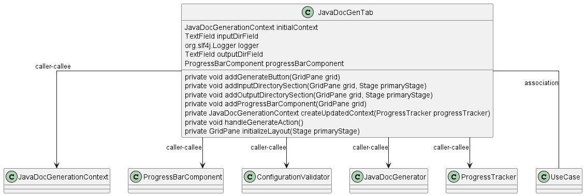

Class Diagram

Annotations
Relationships
| Type | Target | Details |
|---|---|---|
| CALLER_CALLEE | com.pjsoft.j2arch.gui.JavaDocGenTab | |
| CALLER_CALLEE | com.pjsoft.j2arch.docgen.javadoc.util.JavaDocGenerationContext | |
| CALLER_CALLEE | com.pjsoft.j2arch.gui.ProgressBarComponent | |
| CALLER_CALLEE | com.pjsoft.j2arch.core.util.ConfigurationValidator | |
| CALLER_CALLEE | com.pjsoft.j2arch.docgen.javadoc.JavaDocGenerator | |
| CALLER_CALLEE | com.pjsoft.j2arch.core.util.ProgressTracker | |
| ASSOCIATION | com.pjsoft.j2arch.core.util.ProgressTracker.UseCase | Field: JAVA_DOC_GENERATION |
Fields
| Visibility | Type | Name | Annotations | Description |
|---|---|---|---|---|
| private | JavaDocGenerationContext | initialContext | Description placeholder | |
| private | TextField | inputDirField | Description placeholder | |
| private | org.slf4j.Logger | logger | Description placeholder | |
| private | TextField | outputDirField | Description placeholder | |
| private | ProgressBarComponent | progressBarComponent | Description placeholder |
Constructors
| Visibility | Name | Parameters | Annotations | Description |
|---|---|---|---|---|
| public | JavaDocGenTab | Stage primaryStage, JavaDocGenerationContext initialContext | Description placeholder |
Methods
| Visibility | Return Type | Name | Annotations | Description |
|---|---|---|---|---|
| private | void | addGenerateButton(GridPane grid) | Description placeholder | |
| private | void | addInputDirectorySection(GridPane grid, Stage primaryStage) | Description placeholder | |
| private | void | addOutputDirectorySection(GridPane grid, Stage primaryStage) | Description placeholder | |
| private | void | addProgressBarComponent(GridPane grid) | Description placeholder | |
| private | JavaDocGenerationContext | createUpdatedContext(ProgressTracker progressTracker) | Description placeholder | |
| private | void | handleGenerateAction() | Description placeholder | |
| private | GridPane | initializeLayout(Stage primaryStage) | Description placeholder |